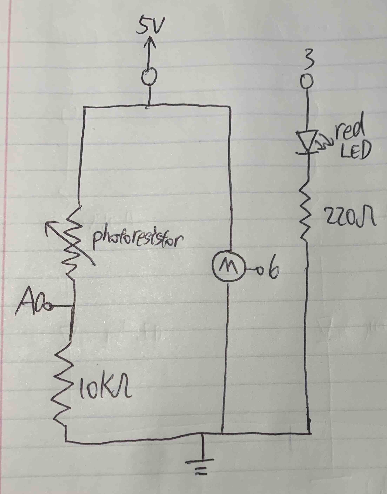
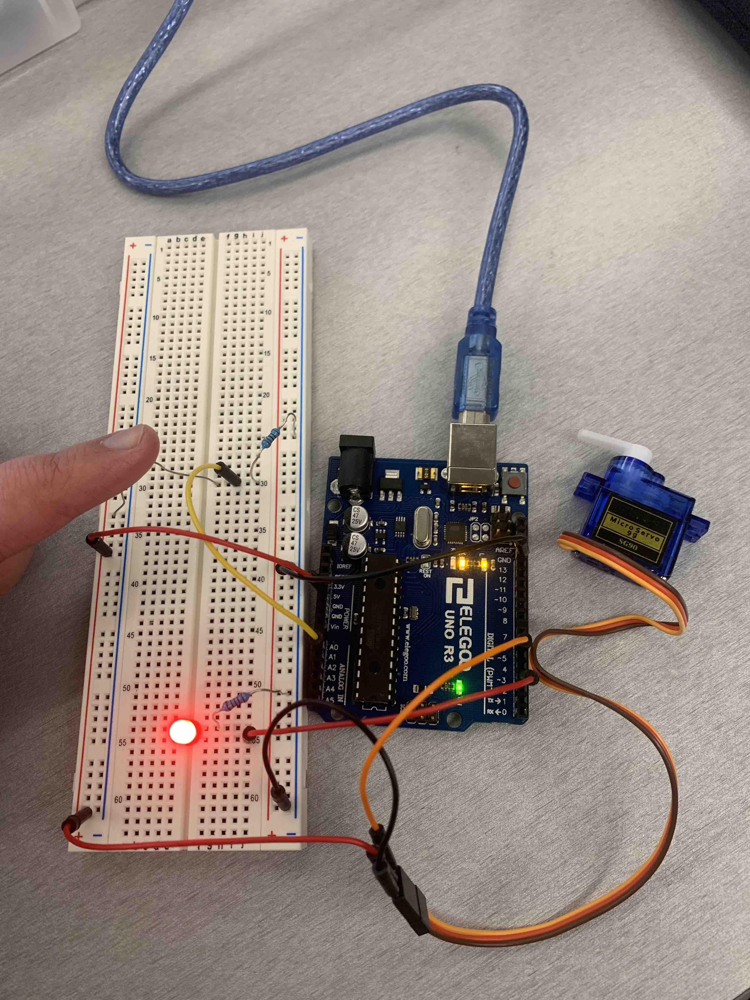
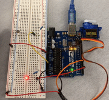

Cheng's Assignment 3 - Input Output!

This is my schematic for the Input Output assignment.

This is my circuit for the Input Output assignment when we do not cover the photoresistor.

This is my circuit for the Input Output assignment when we cover the photoresistor.
// Cheng Guo
// HCDE 439 - HW 3
// Reference 1: https://docs.arduino.cc/learn/electronics/servo-motors/
// Reference 2: https://www.arduino.cc/reference/en/libraries/servo/
#include <Servo.h>
// initialize pins, brightness, and fade amount
Servo hw3Servo; // initialize a servo for HW 3
int photoResistor = A0; // set photo resistor on pin A0
int redLED = 3; // set the red LED on pin 3
int servo = 6; // set the servo on pin 6
int min = 400; // set the minimum read from the photoResistor to 400
int max = 800; // set the minimum read from the photoResistor to 800
int middle = (min + max) / 2; // set the middle value between min and max
int delayTime = 250; // wait for a quarter second for servo to respond
// the setup routine runs once when you press reset:
void setup() {
// initialize serial communication at 9600 bits per second:
Serial.begin(9600);
// initialize digital pins as input and outputs.
pinMode(photoResistor, INPUT); // intialize the photo resistor on pin A0
pinMode(redLED, OUTPUT); // initialize red LED on pin 3
hw3Servo.attach(servo); // attach the servo on pin 6
}
// the loop routine runs over and over again forever:
void loop() {
int photoInput = analogRead(photoResistor); // read the input from the photo resistor
Serial.println(photoInput); // show the output on the serial monitor
int mapped = map(photoInput, min, max, 255, 0); // map the output to the range of LED
int constrained = constrain(mapped, 10, 245); // constrain the output in the middle between 10 and 245
analogWrite(redLED, constrained); // write the output to the red LED
if (photoInput > middle) { // if the input is large, keep the servo at 0 degree
hw3Servo.write(0); // keep the servo at 0 degree
delay(delayTime); // wait for a quarter second for servo to respond
} else { // if the input is small, turn the servo to 180 degree
hw3Servo.write(180); // turn the servo to 180 degree
delay(delayTime); // wait for a quarter second for servo to respond
}
}
This is my code for the Input Output assignment. As we cover the photoresistor with our finger, the red LED becomes brighter, and the motor turned for 180 degrees. As we remove our finger, both the LED and the motor return to their original state.

This is my circuit's operation for the Fade assignment.
My Calculation for LED and the Voltage Divider
I choose to use a red LED, which has a 1.8V drop. 5V - 1.8V = 3.2V and 3.2V / 20mA = 160Ω. To not have the current flow through the those two over 20mA, the resistence should be greater than 160Ω. But I want the resistence to be as small as possible. So I used 220Ω resistors for the red LED.
For the Voltage Divider, Vin = 10V, R2 = 10KΩ, R1 ranges from 200KΩ to 10KΩ according to https://cdn-learn.adafruit.com/downloads/pdf/photocells.pdf, so when R1 is 10KΩ, Vout = 10 / (10 + 10) * 5V = 2.5V, and when R1 is 200KΩ, Vout is 10 / (10 + 200) * 5V = 0.24V. Both scenarios are safe to operate.